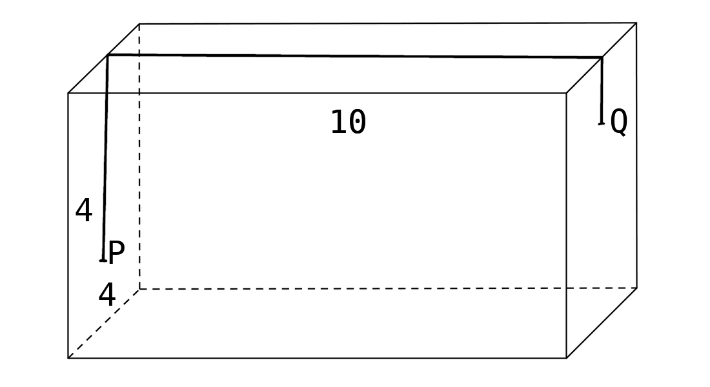
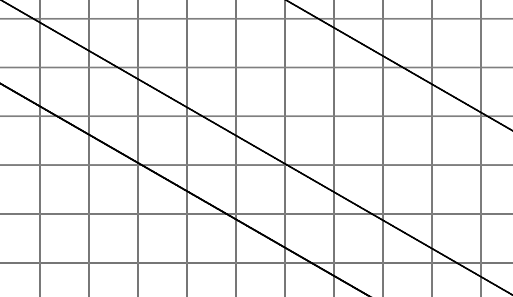
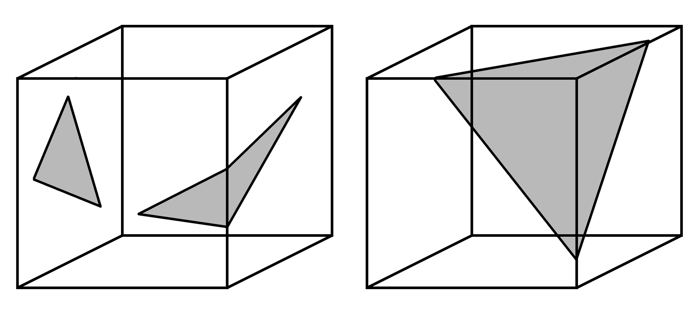
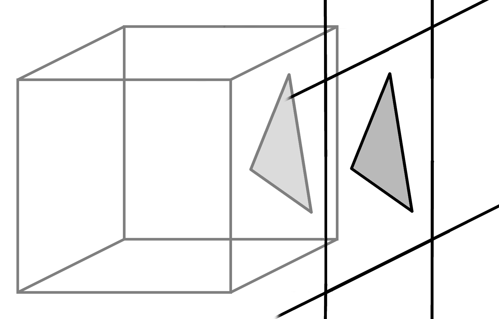
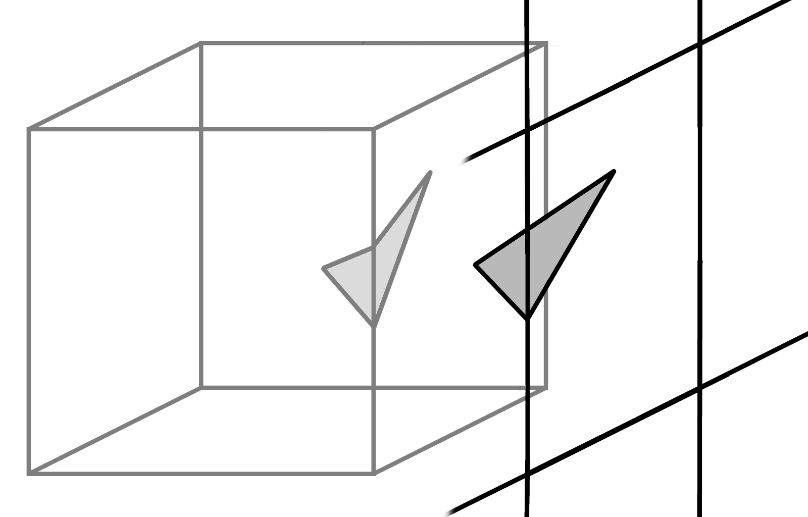
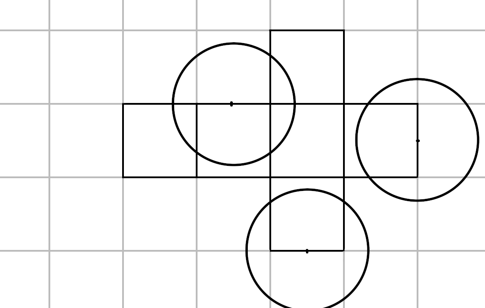

Úvodné zadania
Úloha 1
Na štvorcových stenách kolmého hranola s rozmermi 4×4×10 ležia body P, Q. Bod P je vo vzdialenosti 3 od stredu hrany na hornej podstave a bod Q je vo vzdialenosti 1 od stredu hrany na hornej podstave.
Koza chce ísť po povrchu tohto kvádra z bodu P do bodu Q. Je najkratšia trasa zobrazená na obrázku?
Vyznačená trasa s dĺžkou 14 je najkratšia trasa, pretože po rozložení povrchu kvádra je táto trasa tvorená úsečkou, ktorá je zároveň rovnobežná s hranami kvádra. Akékoľvek vychýlenie z tejto rovnobežnosti trasu len predĺži.
Úloha 2
Potrebujeme dokázať, že priamka vytvorená z bodov na povrchu kocky, prilínajúca k povrchu kocky nikdy nepretne sama seba.
Keďže sieť kocky vypĺňa dvojdimenzionálny priestor a v dvojdimenzionálnom priestore sa nikdy žiadna priamka sama so sebou nepretne, nepretne sa ani prilínajúc povrchu kocky. Keby sme všetky sieťe kocky premietli do jednej siete, dostali by sme sieť vyplnenú nekonečným množstvom rovnobežných priamok.
Úloha 3
Portebujeme overiť, či je súčet vnútorných uhlov trojuholníkov prilínajúcich k provrchu kocky rovný hodnote π.
Ak všetky tri vrcholy trojuholníka patria jednej stene, súčet vnútorných uhlov sa rovná π, nakoľko je možné túto stenu interpretovať ako podmnožinu dvojdimenzionálneho euklidovského priestoru.
Pri rozložení dvoch susediacich segmentov plochy kocky (resp. dve štvorce so spoločnou hranou), vznikne dvojdimenzionálny euklidovský priestor, na ktorom má trojuholník súčet vnútorných uhlov π.

Hypotéza: súčet uhlov v trojuholníku na kocke je lineárne závislý od počtu vrcholov kocky patriacich trojuholníku.
Úloha 4
Na všetkých stenách kocky s hranou 2 rastie lahodná tráva. V strede jednej hrany je strom, ku ktorému farmár priviazal lanom kozu. Najkratšie lano, ktoré umožní priviazanej koze dostať sa ku všetkej lahodnej tráve, je dlhšie ako √13 a zároveň kratšie ako √17.
Najvzdialenejší bod dosiahneme s lanom o dĺžke √2 + √5. Toto bolo zistené pomocou dvoch pravouhlých trojuholníkov, z toho prvý má strany s dĺžkami 1 a teda preponou dlhou √2. A druhý s ramenami dlhými 1, 2 a preponou dlhou √5.
Úloha 5
Farmár má tri kozy, ktoré sa môžu pásť na šťavnatej tráve na stenách kocky. Všetky tri sú priviazané k stĺpu, každá svojim lanom. Laná majú rovnakú dĺžku
Lokalizovali sme tri body na kocke, ktore sú vzájomne symetrické relatívne na rotačnú symetriu kocky, a zároveň sú vrcholmi rovnostranného trojuholníka, čo zabezpeční najefektívnejšiu distribúciu stĺpikov na uviazanie kôz. Vypočítali sme dĺžku lana potrebného na vypasenie troch kôz na kuboidnej pastvine.
Zistili sme, že ak a je dĺžka hrany kocky, pre dĺžku lana platí: